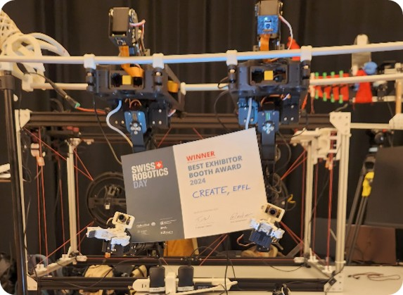
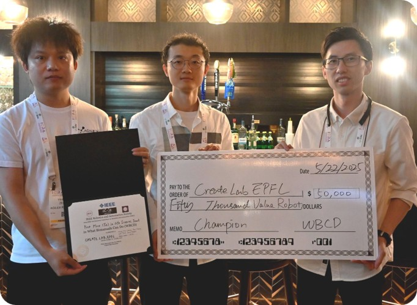

My research explores how robot bodies and intelligence can be designed together. My vision is a shared-autonomy framework where a single human supervisor can remotely oversee, switch between, and collaborate with multiple robots that can autonomously perform tasks beyond human reach. I co-design reconfigurable physical platforms with the models and learning frameworks needed to operate them, keeping a human in the loop as a structured part of the system.


A few open-source hardware and software releases are in preparation, spanning robotic arms, teleoperation devices, simulation tools, and field robotics platforms.